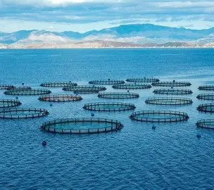

01 · CITOYENNETÉ NUMÉRIQUE
ACTION
Une idée de plateforme qui cherche à rapprocher les jeunes au numérique.
Parler du projet ↗SÉLECTION
Des concepts numériques et communautaires pensés autour de problèmes concrets : participation citoyenne, accès aux opportunités et transition durable.
Une idée de plateforme qui cherche à rapprocher les jeunes au numérique.
Parler du projet ↗Un concept de plateforme pour aider les jeunes à trouver des opportunités.
Programme d’écoute des jeunes imaginé pour mieux relier l’accompagnement et les mécanismes de soutien.
Échanger ↗
Explorer les nouvelles technologiques pour construire des solutions aquacoles adaptées au contexte africain.